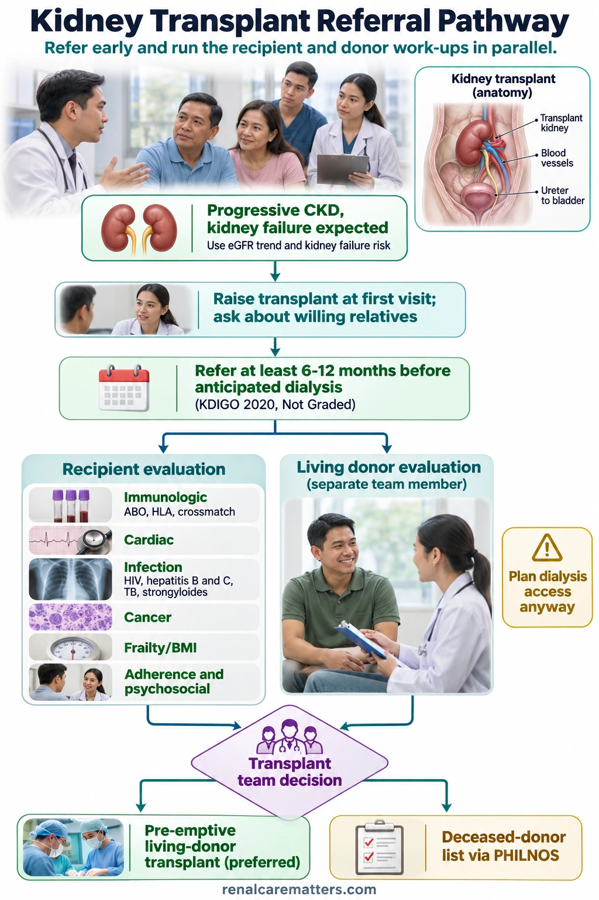
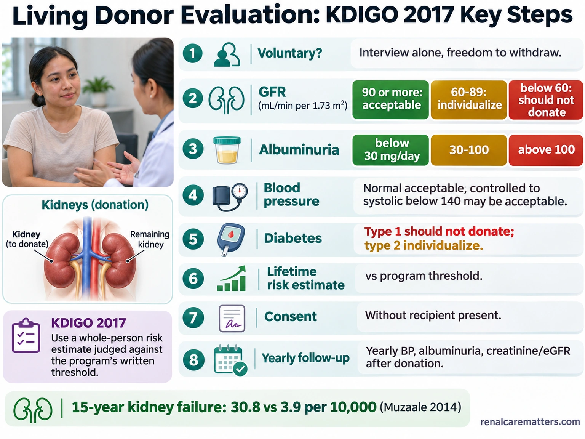

Transplant referral, evaluation and donation ethics
Refer early, evaluate candidates and living donors, and keep donation within Philippine law and ethics.
PublishedNailathalaGipatikPepalwal:ReferencesMga SanggunianMga TinubdanReng Reperensya:14Audience: Adult and pediatric nephrology fellows · internal medicine and pediatric residents · medical interns on medicine, pediatrics, ICU and dialysis rotations, and residents who work shifts as dialysis physicians on dutyRead timeOras ng pagbasaOras sa pagbasaOras ning pamamasa:
Training track for nephrology fellows, residents and medical interns
Study material for medical interns, residents and fellows. It explains the reasoning behind common decisions; it is not a protocol and gives no drug doses. Doses, rates and order sets come from current guidelines, product labels, your institution’s approved protocols and your supervising physician. Benefit rules change: confirm them on the date of service. Every case is fictional.
Learning objectives
After this module you should be able to
Intern: Recognize the patient with advanced chronic kidney disease (CKD) who has never been told about kidney transplantation, record who in the family has offered to donate, and report it to your resident the same day.
Resident: Refer transplant-eligible patients early, using the Kidney Disease: Improving Global Outcomes (KDIGO) 2020 candidate guideline, and explain to the patient and family what the transplant center will look for and why.
Fellow: Evaluate candidates by KDIGO 2020 and living donors by KDIGO 2017, apply Philippine donation law and the Department of Health (DOH) rules on living and deceased donation, and stop any offer that looks like payment or coercion.
Pre-testBefore you read, answer the 5 self-assessment questions and note your score. After the module, select New set of questions and compare. The difference is what you learned; the questions you still miss are what to reread.
Start here
The big picture, in plain words
Your role · the first person to say the word “transplant”An intern often hears it first: the sister who says “I can give my kidney,” the neighbor who offers “for a fee.” Write it down and tell your resident. A resident owns the early referral and the honest first explanation. A fellow owns the medical evaluation of candidate and donor within the transplant team, and is often the one who must say “no” to an offer the law forbids. None of you decides alone: the transplant center, its ethics committee and the attending nephrologist do.
In plain wordsThink of dialysis as a rented generator and a transplant as reconnecting the house to the grid. The generator keeps the lights on, but only for a few hours at a time, and it never runs the whole house. The grid runs everything, all day, but the connection must be installed carefully and maintained for life.
The picture has a limit. A generator has no opinion about the grid, and a house does not reject its wiring. A transplanted kidney is foreign tissue. The recipient’s immune system recognizes the donor’s human leukocyte antigens (HLA) and blood group antigens and will attack the graft unless it is suppressed every day. That suppression invites infection and cancer. A living donor gives up half of a healthy nephron mass; the remaining kidney hyperfilters and compensates, but not without a small long-term cost. So transplantation trades one set of risks for another, and the trade is worth it only for the right recipient, with the right donor, under the right rules.
The physiology explains why the trade is usually worth it. Hemodialysis clears small solutes for about 12 hours a week; a working graft clears them all week, regulates sodium and water continuously, secretes erythropoietin, activates vitamin D and excretes phosphate. Most dialysis patients never feel fully well between sessions. Most successful recipients do.
Figure 1 · Key numbers
Waiting list versus transplant (Wolfe 1999, 228,552 US dialysis patients, observational)Long-term mortality 48% to 82% lower among first deceased-donor recipients than among those still waiting; annual death rates 3.8 versus 6.3 per 100 patient-years
When to refer (KDIGO 2020)At least 6 to 12 months before anticipated dialysis, to allow donor work-up and pre-emptive transplant (Not Graded)
Donor kidney failure risk (Muzaale 2014, 96,217 donors, observational)30.8 per 10,000 donors at 15 years versus 3.9 per 10,000 matched healthy nondonors
Donor kidney function (KDIGO 2017, ungraded statements)GFR ≥90 acceptable; 60 to 89 individualized; below 60 mL/min per 1.73 m² should not donate
Philippine rulesRA 7170 for donation after death; DOH AO 2021-0059 for all living donors (age 21 or older, ethics committee approval, no commercial donation); no foreign recipients from Filipino non-related donors
Most of your patients with kidney failure could benefit from a transplant evaluation, and many in the Philippines are never referred. A few have a family member ready to donate, and a few receive an offer that is really a sale. Your work is to refer early, to evaluate the recipient and the donor honestly, and to keep every donation voluntary, unpaid and within the law.
Opening case · fictional
Case: The brother from Dubai
Thursday, 2 p.m., the nephrology clinic of a tertiary hospital in San Fernando, Pampanga. Mr. Rodel Manalastas, 38, a public school teacher, has CKD from biopsy-proven immunoglobulin A nephropathy. His estimated glomerular filtration rate (eGFR) has fallen from 21 to 13 mL/min per 1.73 m² over 14 months. His urine albumin-to-creatinine ratio is about 900 mg/g. He is not yet on dialysis and has no fistula. He has never been told about transplantation; his last physician said “dialysis na tayo pag kailangan na.”
His younger brother, Jun, 34, an overseas Filipino worker (OFW), is an electrician in Dubai and is home for three weeks. Jun says he will give a kidney “now, before I fly back.” At an airport clinic last month his blood pressure was 142/90 mm Hg; he weighs 92 kg at 1.70 m. Their mother adds that Jun “owes everything” to Rodel, who paid for his schooling. As the family leaves, a neighbor who drove them pulls the intern aside: “Doc, kung hindi pwede si Jun, ako na lang. Basta tulungan lang nila ako sa tuition ng anak ko.”
Before reading on, decide:
Is Rodel a transplant candidate, and how soon should he be referred?
Can Jun donate, and what must his evaluation show before anyone decides?
What do you do with the neighbor’s offer?
Keep your answers in mind. The lesson gives you what you need, and the case review near the end shows one sound response.
Lesson · part 1
Who should be referred, and when
Start with why transplantation helps. A functioning graft replaces filtration, tubular regulation and endocrine function continuously. Dialysis replaces part of filtration intermittently. The difference shows up in survival. Wolfe and colleagues followed 228,552 patients on long-term dialysis in the United States; 46,164 were wait-listed and 23,275 received a first deceased-donor transplant between 1991 and 1997. The risk of death was 2.8 times higher in the first 2 weeks after transplantation than for those still waiting, equal within 5 to 673 days, and much lower by 18 months (relative risk 0.32). Long-term mortality was 48% to 82% lower among recipients, with an annual death rate of 3.8 per 100 patient-years against 6.3 among those waiting and 16.1 among all dialysis patients.1
Read those numbers carefully. The comparison of wait-listed patients with all dialysis patients mostly measures selection: healthier people are listed. The fairer comparison is recipients against those still on the list, who passed the same screening. Even that study is observational, and it describes United States deceased-donor transplantation in the 1990s. It still tells you the shape of the risk: an early price paid in surgery and induction, then a long benefit.
Step in the causal chain
What it means for the patient
What you do
Early surgical and immunologic risk
Death risk is higher in the first weeks than on the list
Explain the early price honestly; it is the reason for careful selection
Continuous clearance and endocrine recovery
Better energy, diet, fluid freedom, fertility for many
Tell eligible patients this is the treatment most of them will feel best on
Time on dialysis before transplant
Longer dialysis exposure is associated with worse graft and patient outcomes
Refer before dialysis, not after years on it
A living donor
No waiting list; planned surgery; possible pre-emptive transplant
Ask about willing relatives at the first conversation
What KDIGO says. The KDIGO 2020 candidate guideline recommends that all patients with CKD who are expected to reach kidney failure be informed about, educated about and considered for transplantation, regardless of socioeconomic status, sex, gender identity or race.2 It advises referral at least 6 to 12 months before anticipated dialysis, to allow identification and evaluation of living donors and to plan pre-emptive transplantation (Not Graded), and referral of patients already on dialysis when they are medically stable and kidney failure is judged irreversible (Not Graded).2 It states that pre-emptive transplantation with a living donor is the preferred treatment for transplant-eligible patients, and that age alone should not exclude a candidate. It recommends that candidates with type 1 or type 2 diabetes be considered for transplantation (1B).2 It also lists a small number of conditions for which it recommends against referral for kidney-alone transplant evaluation (1D), such as multiple myeloma without curative treatment and stable remission; read the full list in the guideline before you counsel such a patient.2
Use the kidney failure trajectory, not one value. A patient whose eGFR has fallen by 8 mL/min per 1.73 m² in a year, with heavy albuminuria, may need dialysis within 12 months even at an eGFR of 13. A frail 82-year-old with a stable eGFR of 14 may never need it. Module 11 teaches the kidney failure risk equation; use it to decide when “6 to 12 months before dialysis” actually is.
In childrenChildren are transplanted pre-emptively whenever possible, because time on dialysis harms growth, schooling and development, and because a child who will need several grafts in a lifetime benefits from starting with the best one. Bladder function, urologic anatomy and vaccination status are evaluated before listing, and the donor is most often a parent. See Attending Pediatric Nephrologist, Module 26.
Philippine practice. Kidney transplantation is concentrated in a few centers, led by the National Kidney and Transplant Institute (NKTI) in Quezon City. A patient in Samar or Sultan Kudarat faces travel, lodging and lost income before the first test. Refer early precisely because the work-up takes longer here.
RememberRaise transplantation at the first visit where kidney failure looks likely within a year or two, and refer while the patient is still off dialysis.
Lesson · part 2
Evaluating the candidate: the risks a transplant must survive
The evaluation asks one question in many forms: will this person survive the operation and the immunosuppression, and will the graft survive this person’s body and life? KDIGO 2020 deliberately considers each risk factor separately and then asks the team to weigh them together against local outcomes.2
Domain
Why it matters (mechanism)
What KDIGO 2020 asks
Immunologic
Preformed anti-HLA antibodies and ABO antibodies cause hyperacute or antibody-mediated rejection
Blood group, HLA typing, antibody screening and crossmatch with the specific donor
Cardiac
Surgery and fluid shifts stress hearts that dialysis and diabetes have already damaged; cardiovascular disease is the leading threat
Evaluate every candidate; non-invasive coronary screening for asymptomatic high-risk candidates (2C)
Infection
Immunosuppression reactivates latent infection
Screen for human immunodeficiency virus (HIV), hepatitis B and C; treat active infection first; hepatitis B, C or HIV alone does not preclude transplantation; screen for tuberculosis and strongyloides in endemic areas
Cancer
Immunosuppression lets small cancers grow
Exclude active malignancy; timing after curative treatment depends on the cancer type
Body habitus and frailty
Wound healing, surgical difficulty, recovery
Assess frailty; consider weight-loss interventions at a body mass index of 35 kg/m² or more
Adherence and psychosocial
A missed day of immunosuppression can start rejection
Assess adherence and its barriers; past nonadherence does not automatically exclude
Tobacco
Vascular and cancer risk
Avoid tobacco before and indefinitely after transplantation
Each row sits in the 2020 guideline; only the grades shown in this module were verified against its text, so the others are given without a grade.2
The Philippine adjustments. Tuberculosis is endemic: the Philippines accounted for about 6.8% of the world’s tuberculosis cases in 2024 on World Health Organization estimates,3 and latent infection screening is part of every work-up here. Hepatitis B is common among dialysis patients. Strongyloides is a real risk for anyone who has walked barefoot in a rice field; immunosuppression can turn a silent infection into hyperinfection. Dental sepsis is easily missed. Ask about herbal products before listing, because some interact with immunosuppressants.
Allocation scores you will meet in the literature. The United States system uses the estimated post-transplant survival (EPTS) score for candidates, built from age, current diabetes, time on dialysis and any prior solid organ transplant. Candidates with an EPTS of 20% or less receive increased priority for kidneys with a kidney donor profile index (KDPI) of 20% or less, a principle called longevity matching.4 Philippine allocation of deceased-donor kidneys runs through the DOH Philippine Network for Organ Sharing (PHILNOS) under its own criteria, not these scores.5 The calculators are still useful teaching tools: they make the trade between donor quality and recipient life expectancy visible.

Figure 2. Refer early and run the recipient and donor work-ups in parallel. KDIGO 2020 advises referral at least 6 to 12 months before anticipated dialysis (Not Graded).
What the fellow does. You coordinate the recipient work-up with the transplant center’s checklist, order and interpret the tests your privileges allow, and write a summary that names each risk and how it was addressed. You do not tell a patient he is “cleared” or “not a candidate” before the transplant team has decided.
RememberEvaluate one risk at a time, fix what can be fixed, and let the transplant team weigh the whole person; never let a single number decide candidacy.
Lesson · part 3
The living donor: a healthy person taking a surgical risk for someone else
Living donation is the only operation in medicine done on a healthy person for another person’s benefit. That changes the ethics of every step. The donor is your patient too, and the donor’s interests must be weighed separately from the recipient’s.
The physiology. After nephrectomy the remaining kidney increases its glomerular filtration within days through hyperfiltration and later hypertrophy. The donor’s GFR usually settles at roughly two-thirds or more of the pre-donation value, not half. The cost is a smaller reserve: if diabetes, hypertension, obesity or a kidney disease arrives later in life, it acts on one kidney instead of two.
How big is the risk? Muzaale and colleagues compared 96,217 United States living donors with 20,024 participants of a national health survey, matched to donors who would have passed donor screening. At 15 years, kidney failure had developed in 30.8 per 10,000 donors against 3.9 per 10,000 matched healthy nondonors. The estimated lifetime risk was 90 per 10,000 donors, 14 per 10,000 healthy nondonors and 326 per 10,000 in the unscreened general population. The relative increase is large; the absolute increase is small, about 27 extra cases per 10,000 donors at 15 years.6 The study was observational, the comparison group was constructed, and follow-up of donors was shorter than of nondonors. KDIGO 2017 suggests telling donor candidates that their future risk of kidney failure may be slightly higher because of donation, while the average absolute risk remains low (2C).7
The KDIGO 2017 framework. The guideline replaces single cut-offs with a comprehensive risk estimate, judged against each program’s written acceptable-risk threshold. Most of its statements are ungraded.7
Finding in the donor
KDIGO 2017 statement
Why
GFR
≥90 acceptable; 60–89 individualized; <60 mL/min per 1.73 m² should not donate
Reserve after nephrectomy depends on starting nephron mass
Albumin excretion
<30 mg/day acceptable; 30–100 individualized; >100 mg/day should not donate
Albuminuria signals existing kidney damage
Blood pressure
Normal pressure acceptable; hypertension controlled to systolic <140 mm Hg with one or two agents may be acceptable after individual review
Hypertension adds to single-kidney risk
Diabetes
Type 1 diabetes: should not donate. Prediabetes or type 2: individualized
Diabetic kidney disease in a solitary kidney
Consent
Willingness verified as voluntary; informed consent obtained in the absence of the intended recipient
Family pressure is invisible when the recipient is in the room
Team
At least one key team member not involved in the recipient’s care
Protects the donor from the recipient team’s natural bias
After donation
At least yearly blood pressure, albuminuria, and creatinine with eGFR
Early detection in a reduced nephron mass
All rows are from the 2017 guideline.7 The site’s donor calculator estimates lifetime kidney failure risk from demographic and health data; use it to start the conversation, not to end it.
Back to Jun. One airport reading of 142/90 mm Hg is not a diagnosis. He needs standardized office readings and, ideally, ambulatory monitoring. His body mass index is about 32 kg/m²; obesity raises his long-term risk and his surgical risk. He is 34, so his lifetime horizon is long, which raises the weight of any risk factor. He is home for three weeks: a complete donor evaluation is rarely finished that quickly, and a rushed one is unsafe. His job abroad depends on fitness to work; donation may affect his contract and insurance. And his mother’s words, “he owes everything,” are a warning sign of family pressure. In Filipino families, utang na loob can make a refusal feel impossible. As a brother he is a living related donor under DOH AO 2021-0059, which still requires an assessment of competence and coercion by a psychiatrist or clinical psychologist and approval by the Hospital Transplant Ethics Committee.8 Someone on the team who does not care for Rodel must talk with Jun alone, and Jun must be told he can withdraw at any time, with the team giving a medical reason that protects him from blame.

Figure 3. The donor is a second patient. KDIGO 2017 asks for a whole-person risk estimate judged against the program’s written threshold, and consent obtained without the recipient in the room.
RememberThe donor is a second patient. Evaluate the donor separately, consent the donor alone, and never let the recipient’s urgency shorten the donor’s work-up.
Lesson · part 4
Philippine donation law, trafficking and the Declaration of Istanbul
Organ trade grows wherever there is poverty, a long waiting list and a weak system. The Philippines has seen all three, and its rules were written in response. You need to know them well enough to recognize a violation and to refuse it calmly.
The Declaration of Istanbul. The 2018 edition of the Declaration of Istanbul on Organ Trafficking and Transplant Tourism, endorsed by the major international transplant societies, condemns organ trafficking and transplant tourism and calls on countries to pursue self-sufficiency in organ donation.9 It is an ethics statement, not a law, but Philippine DOH policy commits to it explicitly.10
Instrument
What it governs
What it means at the bedside
Republic Act (RA) 7170, Organ Donation Act of 1991 (as amended by RA 7885)
Donation of all or part of the body after death, by legacy or by the family
An adult of sound mind, 18 or older, may make a legacy, including by a signed donor card before two witnesses. Without a legacy, the family may donate in a fixed order of priority beginning with the spouse. Death is the irreversible cessation of circulatory and respiratory function or of all brain function. Two physicians who are not on the removal team or the recipient’s care team certify death.
DOH Administrative Order (AO) 2010-0019, and AO 2010-0019-A (2018)
National program for sharing organs from deceased donors through PHILNOS; brain death certification
Potential deceased donors are referred through the hospital’s organ procurement process; organs are allocated nationally by set criteria
DOH AO 2021-0059, Guidelines on Ethical Organ Donation and Transplantation from Living Donors
All living donors, related (blood relatives to the fourth degree) and non-related
Donors 21 years or older and mentally competent; voluntariness and freedom to withdraw, with consent witnessed by people unrelated to donor or recipient; psychiatric or psychological assessment for competence and coercion; no commercial donation; the Hospital Transplant Ethics Committee approves or disapproves each donation; lifelong donor monitoring
DOH AO 2010-0018
Living non-related donation (earlier order, still cited by AO 2021-0059)
Only directed donors with genuine emotional ties (spouse, friend, colleague and similar); approval by the hospital ethics committee; no compensation or gratuity package; no non-directed donor lists; foreigners may not receive organs from Filipino living non-related donors; kidney transplantation is not part of medical tourism
RA 9208 as amended by RA 10364 and RA 11862 (Expanded Anti-Trafficking in Persons Act of 2022)
Trafficking in persons
Recruiting, hiring, transporting or harboring a person for the removal or sale of organs is trafficking, a crime
Sources: RA 7170 text,11 AO 2010-0019,5 AO 2021-0059,8 AO 2010-0018,10 RA 11862.12 AO 2021-0059 supersedes earlier provisions that are inconsistent with it. Bills to replace RA 7170 with a broader organ donation law were filed in the 20th Congress in 2025; as of this writing none has become law. Check for a new statute before you rely on this table.
The neighbor’s offer. He is not a relative, so the rules for living non-related donors apply. His condition, “help with my child’s tuition,” is a gratuity attached to donation, which AO 2010-0018 forbids and AO 2021-0059 treats as commercial donation, and arranging donation for payment may meet the definition of trafficking for the removal or sale of organs.10,8,12 He is probably a decent man in financial trouble, not a criminal. Treat him with respect, do not record his offer as a donor referral, tell him plainly that the law does not allow donation in exchange for any help, and report the conversation to your attending, who decides with the Hospital Ethics Committee whether further reporting is required. If he wants to donate freely later, the ethics committee, not you, judges whether a genuine emotional tie exists.
Figure 4 · When an offer may be a sale
ListenLet the person finish. Do not argue, promise or threaten.
Name the rule“The law does not allow a kidney to be given in exchange for money, tuition, a job or any other help.”
Do not referDo not add the person to any donor list or start tests.
Tell your seniorReport to your resident or fellow and the attending nephrologist the same day.
DocumentWrite what was said, in the person’s words, without judgment.
Ethics committeeThe attending brings it to the Hospital Ethics Committee, which decides on further reporting.
Stop and callStop and call the attending nephrologist, per unit protocol, but always ask the attending nephrologist for guidance, when:
Anyone offers or requests money, tuition, a job, debt relief or any favor connected with donation
A donor candidate seems pressured, frightened or unable to speak freely, or the recipient insists on being present for donor consent
A foreign patient asks about a Filipino living non-related donor, or a patient asks about transplantation abroad
A potential deceased donor is identified in your ward or intensive care unit
A family asks you to “fast-track” a donor before a work contract or flight
RememberA donation must be voluntary, unpaid and examined by people who do not care for the recipient. If any of the three is missing, stop and call.
Lesson · part 5
PhilHealth transplant benefits: what the circular says, and what you may promise
Cost decides more Philippine transplant journeys than medicine does. The work-up, the surgery, the donor’s operation and lifelong immunosuppressants can exhaust a family. Since 2024 Philippine Health Insurance Corporation (PhilHealth) has run a Z benefit for kidney transplantation (PhilHealth Circular 2024-0035).13 PhilHealth Circular 2026-0019, the Z Benefits Package for Kidney Transplantation (Revision 1), signed October 26, 2026, amends it and covers adults and children. It takes effect 15 days after publication in the Official Gazette or a newspaper of general circulation; the circular itself does not state the publication date, so confirm the effective date with PhilHealth.14
Who and where. Under Revision 1, all Filipinos are automatically entitled, subject to PhilHealth membership rules. All patients with CKD stage 5 who meet the clinical criteria are eligible, with a living donor (related or non-related) or a deceased donor; selection follows the circular’s pre-authorization checklist and request form. The benefit is available only in contracted health facilities. A multidisciplinary team (MDT) must include an attending nephrologist, a transplant surgeon and, for living-donor procedures, a urologist; it evaluates donor and recipient and submits a treatment plan. Facilities must follow DOH ethical guidelines on living donation and the laws on voluntary donation; deceased-donor claims need an organ retrieval report from an authorized organ procurement organization.14
Pre-authorization. For a living donor, the facility’s PhilHealth liaison submits the pre-authorization checklist and request form, the Member Empowerment form and the MDT plan before the transplant. For a deceased donor, pre-authorization is submitted within 2 working days after the transplant. An approved pre-authorization is valid for 180 calendar days. Every patient is entered in the kidney transplantation registry with a registration number. The facility files the claim within 60 days after discharge.14
What it covers. Pre-transplant evaluation; immunosuppressant therapy in the induction phase until 1 week after discharge; the transplant surgery; donor management, donor nephrectomy, and organ retrieval and preservation. The 45-day annual benefit limit does not apply. Drugs are reimbursed if they are in the latest Philippine National Drug Formulary (PNDF); others need a positive health technology assessment recommendation. PhilHealth pays the facility a single package rate, and the facility distributes the professional fees.14
Package code
Donor
Induction
Surgery or retrieval
Rate (PHP)
Z025A1
Living
Basiliximab or equine antithymocyte globulin (ATG)
Laparoscopic donor, open recipient
993,000
Z025A2
Living
Basiliximab or equine ATG
Open surgery, both
865,000
Z025B1
Living
Rabbit ATG
Laparoscopic donor, open recipient
1,045,000
Z025B2
Living
Rabbit ATG
Open surgery, both
918,000
Z026A1
Deceased
Basiliximab or equine ATG
Retrieval with machine perfusion
2,093,000
Z026A2
Deceased
Basiliximab or equine ATG
Retrieval with cold storage
1,583,000
Z026B1
Deceased
Rabbit ATG
Retrieval with machine perfusion
2,146,000
Z026B2
Deceased
Rabbit ATG
Retrieval with cold storage
1,636,000
Rates as printed in the circular signed October 26, 2026; confirm the effective date and current rates with your PhilHealth liaison on the date of service.14 ATG is antithymocyte globulin; the induction agent is the transplant team’s choice, and the code follows it, not the other way around.
Copayment. There is no copayment in basic or ward accommodation, none for recipients who need special beds such as reverse isolation, and none for managing postoperative complications of donors and recipients. Copayment is allowed only for amenities, choice of physician within the MDT, specialist fees in non-basic accommodation, or services the package does not cover, agreed during the Member Empowerment form discussion. There is no balance billing beyond the package rate for covered services.14
If the graft fails. After the Z benefit, patients remain eligible for the hemodialysis or peritoneal dialysis benefits if they return to dialysis because of graft failure from rejection or infection, acute kidney injury or other complications.14 Tell families this early; fear of losing dialysis coverage keeps some from considering transplant.
What you may promise. State the structure and the printed rates with the caveat above, send every family to the transplant center’s PhilHealth liaison and social worker early (pre-authorization for living donors must come before surgery), and never let the benefit decide candidacy or the choice of induction drug. Long-term immunosuppressants after the induction phase are not in this package; families still need a plan for them.
RememberQuote the PhilHealth package only as printed in Circular 2026-0019, with its effective date confirmed on the date of service, and get the living-donor pre-authorization filed before surgery.
On the floor
Real situations: problems and solutions
These are fictional but typical. For each one, cover the answer, decide what you would do, then compare. Where a step depends on local rules, your unit’s procedure and your supervisor’s direction come first.
The patient nobody told
What you see
A 45-year-old jeepney driver in Cabanatuan has been on hemodialysis for 3 years. He asks the moonlighting resident whether “transplant is only for the rich.” His chart shows no transplant discussion.
What is likely going on
A missed referral. He may still be a candidate; cost has never been explored.
What to do
Tell him transplantation is worth evaluating, document the conversation, and ask the attending nephrologist about referral to a transplant center and to its social worker for PhilHealth and other support.
Why it matters
KDIGO 2020 asks that every patient expected to reach kidney failure be considered, regardless of socioeconomic status.
The wife who cannot say no
What you see
During a donor interview, a 41-year-old wife looks at her husband before every answer. He insists on staying in the room.
What is likely going on
Possible pressure; consent cannot be judged with the recipient present.
What to do
Politely ask the husband to step out, as KDIGO 2017 expects; let a team member not involved in his care continue alone with her, and tell her she may withdraw at any time.
Why it matters
Voluntariness is the foundation of living donation, and the recipient’s presence hides pressure.
The foreign patient’s inquiry
What you see
A foreign patient admitted for dialysis asks the fellow whether a Filipino friend of his driver could donate a kidney before he flies home.
What is likely going on
A request for a Filipino living non-related donor for a foreign recipient.
What to do
Explain that DOH AO 2010-0018 does not allow foreigners to receive organs from Filipino living non-related donors; document and inform the attending nephrologist.
Why it matters
The order exists to stop the export of Filipino organs through transplant tourism.
The brain-injured young man
What you see
In the intensive care unit (ICU), a 22-year-old motorcycle crash victim has lost brainstem reflexes. A relative asks the resident whether his organs “can help someone.”
What is likely going on
A potential deceased donor; death has not yet been certified.
What to do
Acknowledge the question kindly, tell the family the specialist team will speak with them, and notify through the hospital’s organ donation protocol; do not discuss allocation or certify death yourself.
Why it matters
RA 7170 requires death to be certified by physicians independent of the transplant team, and PHILNOS rules govern allocation.
Field notes
Put “transplant discussed: yes or no” in every advanced CKD clinic note.
Ask “Has anyone in your family offered to donate?” and write down names and relationships.
Never estimate a donor’s match or a benefit amount in front of the family.
Keep the transplant center’s referral checklist and contact number in your phone.
When an offer sounds like a sale, stop, name the rule, and escalate the same day.
Case review
Back to the case: The brother from Dubai
Candidate and timing. Yes. Rodel is 38, has a known glomerular cause, and an eGFR falling about 8 mL/min per 1.73 m² a year with heavy albuminuria: he may need dialysis within the year. KDIGO 2020 advises referral at least 6 to 12 months before anticipated dialysis (Not Graded) and prefers pre-emptive living-donor transplantation for eligible patients. Refer him to a transplant center this week, start the recipient work-up, and still plan dialysis access, because a pre-emptive transplant may not happen in time. Note that immunoglobulin A nephropathy can recur in a graft; the transplant team will discuss it, and it is not a reason to delay referral.
Can Jun donate. Possibly, but nobody can say yet. He needs a full evaluation by KDIGO 2017: measured or confirmed GFR (60 to 89 is individualized, below 60 should not donate), albumin excretion, properly measured blood pressure, glucose testing, and a lifetime risk estimate that weighs his age, weight and pressure. His three-week window is not a reason to rush. He must be consented alone, by a team member not caring for Rodel, with the freedom to withdraw and a face-saving medical reason if he does. Family pressure (“he owes everything”) must be explored openly. If he is not suitable now, other relatives may be evaluated.
The neighbor’s offer. It is an offer of donation for a benefit, which DOH AO 2010-0018 forbids for living non-related donors, and arranging it could meet the definition of trafficking for the removal or sale of organs under the anti-trafficking law. The intern should not argue or promise; she should say kindly that the law does not allow it, not record him as a donor, report it to the resident and attending the same day, and document his words. The attending decides with the Hospital Ethics Committee what further reporting is needed.
Interactive case · fictional
Interactive case: Two offers in one afternoon
Work through a shift one decision at a time. The panel at the top changes with what you choose. After each choice you see why it is, or is not, the best move; after a weaker one you can try again or carry on and see where it leads. Your first choice at each step is scored. The score stays on this device and nothing is sent anywhere. In real practice, your unit’s protocol and the people responsible for each decision come first.
Skills lab · with your preceptor
Skills checklist: Transplant referral and donation ethics
Complete with a preceptor, in simulation or at your own unit. Sign-off is local. Your preceptor rates each step as satisfactory, needs practice, or not observed. Steps marked Critical must all be satisfactory before sign-off. This checklist supports supervised learning; your unit’s own procedure and competency form are the authority. A printable version of every checklist is on the trainer page.
Identifies a patient with progressive CKD who has not been told about transplantation and raises it with the team
Writes a referral that names the timing rationale (KDIGO 2020: 6 to 12 months before anticipated dialysis)
Lists the recipient evaluation domains, including tuberculosis, hepatitis B and strongyloides screening relevant to the Philippines
Explains living donor risk with absolute numbers and the KDIGO 2017 GFR and albuminuria statements
Responds to a simulated paid-donation offer with the correct rule, no referral, and same-day escalation
Placement activity. Nephrology clinic, transplant clinic or simulation
Self-assessment
Check your understanding
Each visit draws 5 questions at random from this module’s 5-question bank. Choose the single best answer for each, then select Check answers; an explanation appears under the best answer. Select New set of questions for a different mix. A good target is 4 of 5 on two different sets. Nothing you select is sent anywhere; scoring happens in your browser.
Wolfe, R. A., Ashby, V. B., Milford, E. L., Ojo, A. O., Ettenger, R. E., Agodoa, L. Y., Held, P. J., & Port, F. K. (1999). Comparison of mortality in all patients on dialysis, patients on dialysis awaiting transplantation, and recipients of a first cadaveric transplant. New England Journal of Medicine, 341(23), 1725–1730. https://doi.org/10.1056/NEJM199912023412303
Chadban, S. J., Ahn, C., Axelrod, D. A., Foster, B. J., Kasiske, B. L., Kher, V., Kumar, D., Oberbauer, R., Pascual, J., Pilmore, H. L., Rodrigue, J. R., Segev, D. L., Sheerin, N. S., Tinckam, K. J., Wong, G., & Knoll, G. A. (2020). KDIGO clinical practice guideline on the evaluation and management of candidates for kidney transplantation. Transplantation, 104(4S1 Suppl. 1), S11–S103. https://doi.org/10.1097/TP.0000000000003136
Organ Procurement and Transplantation Network. (2026). A guide to calculating and interpreting the estimated post-transplant survival (EPTS) score used in the kidney allocation system (KAS) (Updated April 7, 2026). Health Resources and Services Administration. https://www.hrsa.gov/sites/default/files/hrsa/optn/epts_guide.pdf
Muzaale, A. D., Massie, A. B., Wang, M. C., Montgomery, R. A., McBride, M. A., Wainright, J. L., & Segev, D. L. (2014). Risk of end-stage renal disease following live kidney donation. JAMA, 311(6), 579–586. https://doi.org/10.1001/jama.2013.285141
Kidney Disease: Improving Global Outcomes (KDIGO) Living Kidney Donor Work Group. (2017). KDIGO clinical practice guideline on the evaluation and care of living kidney donors. Transplantation, 101(8S Suppl. 1), S1–S109. https://doi.org/10.1097/TP.0000000000001769
Muller, E., Dominguez-Gil, B., & Martin, D. (2019). The Declaration of Istanbul on Organ Trafficking and Transplant Tourism (2018 edition) introduction. Transplantation, 103(2), 217. https://doi.org/10.1097/TP.0000000000002541
Department of Health. (2010). Revised national policy on living non-related donation and transplantation and its implementing structure amending for the purpose Administrative Order No. 2008-0004-A (Administrative Order No. 2010-0018). Supreme Court E-Library. https://elibrary.judiciary.gov.ph/thebookshelf/showdocs/10/52059
Educational self-study for physicians in training. Clinical tasks need your institution’s authorization and supervision. Completing this track is an Academy learning record only. It does not confer licensure, specialist status, PSN or PNSP membership or board eligibility, procedural privileges, CPD units, or completion of an institutional training program, and it does not replace current guidelines, regulations, your institution’s protocols and formulary, or your supervisor.